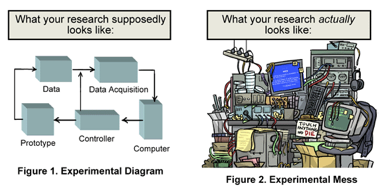

BTAS 2015 Special Session


We are organizing a special session on Reproducible Research in Biometrics during the IEEE Seventh International Conference on Biometrics: Theory, Applications and Systems (BTAS 2015) that will be held in the September 8-11, 2015 time period in Arlington, Virginia in the Washington, DC area (USA).
If you think you work is eligible for Reproducible Research then submit a paper to BTAS ( http://www.btas2015.org/Paper_Submission.html ) before April 1 2015 and select the track “Reproducible Research in Biometrics” while submitting online.
Description
Biometrics research is an interdisciplinary field that combines expertise from several research areas. Starting with signal and image processing to perform preprocessing and feature extraction, passing by the field of machine learning with means of subspace projections or data modeling, to the field of information theory, including pattern recognition and distance computations, biometrics research might require a lot of different expertises. Additionally, to make results comparable, a proper implementation of the required evaluation protocols of biometric databases and merit figures need to be provided. This makes biometrics a particularly difficult research topic, especially when comparable results should be provided. More often than not, biometric algorithms are tested only on a few of the available databases. Research results can not be reproduced since because researchers themselves do not publish all of the meta-parameters of their algorithms.
One attempt to tackle issues surrounding research irreproducibility is the concept of Reproducible Research (http://www.reproducibleresearch.net, RR). An RR paper is comprised of several aspects, which makes it possible and easy to exactly reproduce experiments:
(a) a research publication that describes the work in all relevant details,
(b) the source code to reproduce all results,
(c) the data required to reproduce the results,
(d)instructions how to apply the code on the data to replicate the results on the paper.
A strong reason for providing RR, besides easing research itself and providing for longer term re-use, is the visibility of the resulting scientific publications. As [1] showed, the average number of citations for papers that provide source-code in IEEE Transactions on Image Processing (IEEE-TIP) is seven times higher that of papers that do not.
[1] Patrick Vandewalle, Jelena Kovacevic, and Martin Vetterli. Reproducible research in signal processing - what, why, and how. IEEE Signal Processing Magazine, 26, 2009.
Reproducible research in Biometrics should be promoted. A special session exclusively composed of reproducible research papers following the above-mentioned principles would be a unique and impactful event.
If you think you work is eligible for Reproducible Research then submit a paper to BTAS ( http://www.btas2015.org/Paper_Submission.html ) before April 1 2015 and select the track “Reproducible Research in Biometrics” while submitting online.
Organizers
Sébastien Marcel received the Ph.D. degree in signal processing from Université de Rennes I in France (2000) at CNET, the research center of France Telecom (now Orange Labs). He is currently interested in pattern recognition and machine learning with a focus on biometrics. He is a senior researcher at the Idiap Research Institute (CH), where he heads a research team and conducts research on face recognition, speaker recognition and spoofing attacks detection. In 2010, he was appointed Visiting Associate Professor at the University of Cagliari (IT) where he taught a series of lectures in face recognition. He is also lecturer at the Ecole Polytechnique Fédérale de Lausanne (EPFL) where he is teaching on “Fundamentals in Statistical Pattern Recognition”. He serves on the Program Committee of several scientific journals and international conferences in pattern recognition and computer vision. He is also an Associate Editor of the IEEE Transactions on Information Forensics and Security, a Co-editor of the “Handbook of Biometric Anti-Spoofing”, a Guest Editor of the IEEE Transactions on Information Forensics and Security Special Issue on “Biometric Spoofing and Countermeasures”, and Co-editor of the IEEE Signal Processing Magazine Special Issue on “Biometric Security and Privacy”. Finally he is the principal investigator of international research projects including MOBIO (EU FP7 Mobile Biometry), TABULA RASA (EU FP7 Trusted Biometrics under Spoofing Attacks) and BEAT (EU FP7 Biometrics Evaluation and Testing).
André Anjos (http://andreanjos.org) received his Ph.D. degree in signal processing from the Federal University of Rio de Janeiro in 2006. He joined the ATLAS Experiment at European Centre for Particle Physics (CERN, Switzerland) from 2001 until 2010 where he worked in the development and deployment of the Trigger and Data Acquisition systems that are nowadays powering the discovery of the Higgs boson. During his time at CERN, André studied the application of neural networks and statistical methods for particle recognition at the trigger level and developed several software components still in use today. In 2010, André joined the Biometrics Group at the Idiap Research Institute where he works mostly with face biometrics. His current interests include reproducible research in biometrics, anti-spoofing and recognition using faces, pattern recognition, image processing and machine learning. André currently leads the design and implementation of the BEAT platform for evaluation and testing. He also serves as reviewer for several scientific journals in pattern recognition, image processing and biometrics.
Mauro Barni graduated in electronic engineering at the University of Florence in 1991. He received the PhD in Informatics and Telecommunications in October 1995. He has carried out his research activity for almost 20 years rst at the Department of Electronics and Telecommunication of the University of Florence, then at the Department of Information Engineering and Mathematical Sciences of the University of Siena where he works as associate Professor. During the last decade, his activity has focused on digital image processing and information security, with particular reference to the application of image processing techniques to copyright protection (digital watermarking) and authentication of multimedia (multimedia forensics). Lately he has been studying the possibility of processing encrypted signals without decrypting them (signal processing in the encrypted domain D s.p.e.d.). With his research, he contributed to lay the basis of a general s.p.e.d. theory as a research discipline at the cross-road between cryptography and signal processing. He is author/coauthor of about 270 papers published in international journals and conference proceedings, he holds three patents in the eld of digital watermarking and one patent dealing with anti-counterfeiting technology. He is co-author of the book “Watermarking Systems Engineering: Enabling Digital Assets Security and other Applications", published by Dekker Inc. in February 2004. He is editor of the book “Document and Image Compression" published by CRC-Press in 2006. He was the founding editor in chief of the EURASIP Journal on Information Security. He is part of the editorial board of the IEEE Signal Processing Magazine. He has served for 9 years as associate editor of the IEEE Trans. on Circuits and system for Video Technology and for 3 years the IEEE Transactions on Information Forensics and Security. From 2010 to 2011, Prof. Barni has been the chairman of the IEEE Information Forensic and Security Technical Committee (IFS-TC) of the IEEE Signal Processing Society. Mauro Barni is a fellow member of the IEEE and senior member of EURASIP. He was appointed distinguished lecturer by the IEEE Signal Processing Society for the years 2013-2014.
Special session on Reproducible Research in Biometrics
